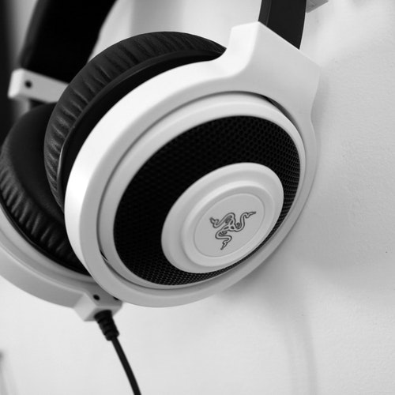
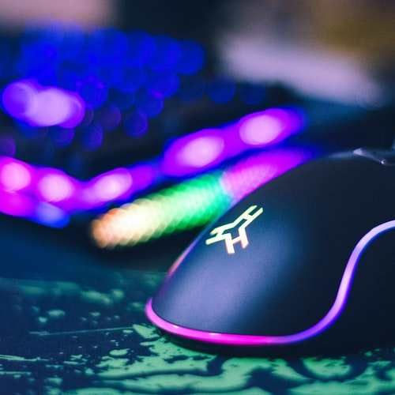
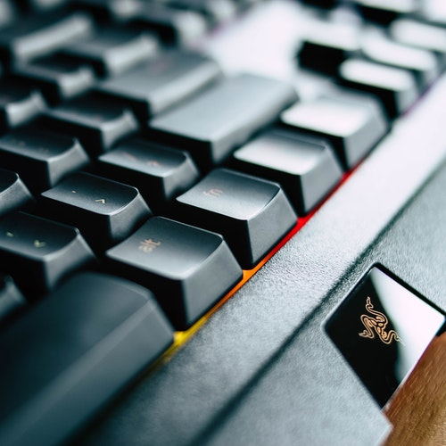

Headset merupakan headphone dengan tambahan mikrofon
sehingga tidak hanya bisa digunakan untuk mendengarkan,
tetapi juga untuk komunikasi. Headset idealnya diguanakan
untuk berkomunikasi seperti via Skype, call center maupun
video call yang lainnya.
Headset maupun headphone
lebih sering dipasang pada PC atau laptop.
iasanya headset mempunyai 2 jack audio,
jack pertama untuk input yakni mikrofon
dan jack kedua sebagai output yakni speaker.

Mouse adalah salah satu hardware komputer yang menerima
input-an berupa gerakan, tekanan tombol (click), dan
penggulungan (scroll) yang dapat digunakan untuk memilih
teks, ikon, file, dan folder. Mouse dalam Bahasa Indonesia
diterjemahkan sebagai “tetikus”. Dikatakan demikian karena
memang bentuk device ini menyerupai tikus yang kecil
meruncing di depan dan menggembung besar di bagian belakang.

Keyboard adalah sebuah perangkat keras (hardware) pada komputer
yang berfungsi sebagai alat untuk input data yang berupa huruf,
angka dan simbol. Atau definisi keyboard yaitu suatu perangkat
keras pada komputer yang berbentuk papan dan memiliki berbagai
macam tombol yang dimana tombol tersebut fungsinya berbeda
tergantung pada penekanannya yang bisa menghasilkan proses
yang sesuai dengan keinginan penggunanya.